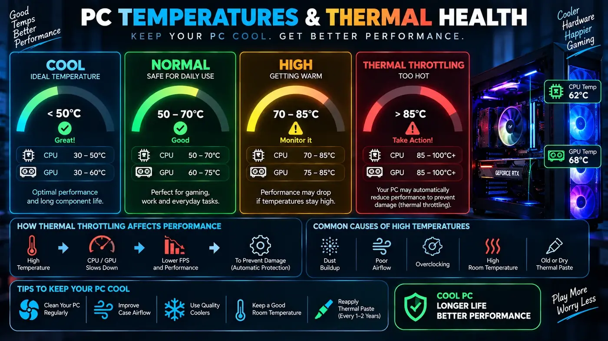
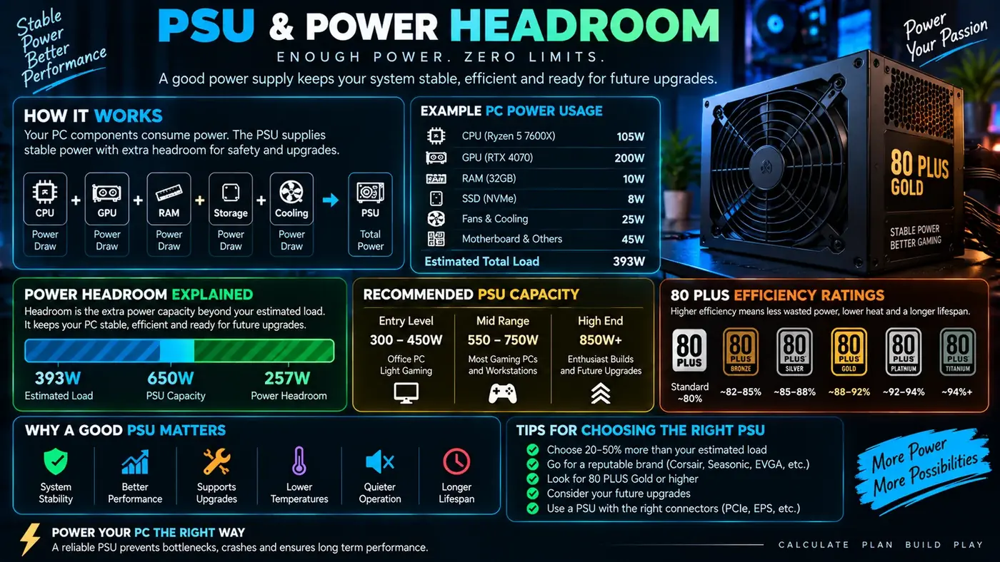

How to Check PC Usage: CPU, GPU, RAM, Disk and Network Activity
Learn how to monitor PC usage in Windows, understand CPU and GPU percentages, find memory pressure, spot storage problems and troubleshoot slow or stuttering performance.
Why checking PC usage should come before upgrading
When a PC feels slow, it is tempting to assume that the hardware is too old. Often the better first step is to observe what the computer is doing. Windows can show CPU, memory, disk, network and GPU activity while the problem is happening.
Usage monitoring is useful because the same symptom can have different causes. A game with low FPS may be GPU-limited, CPU-limited, memory-limited or restricted by a frame cap. A desktop that feels slow may be waiting on storage, background software or a process that is consuming resources.
How to check CPU usage in Windows
Press Ctrl + Shift + Esc to open Task Manager. The Processes tab shows which applications are using CPU resources, while the Performance tab provides a broader view of processor activity.
Do not treat 100% CPU usage as automatically bad. A rendering or encoding job can legitimately use the processor heavily. The useful question is whether the CPU is busy because of the task you started and whether that load is preventing the performance you want.
Per-core CPU usage matters
Total CPU usage is an average across available processing resources. A game can be limited by one or a few heavily loaded threads while total CPU usage appears moderate. Hardware monitoring software can help you inspect individual core behavior when diagnosing high-FPS gaming or simulation workloads.
How to check GPU usage
Task Manager can show GPU utilization and dedicated/shared GPU memory. During a game, observe the GPU while reproducing the exact scene where performance drops.
A high GPU percentage is often normal. If the GPU is near full load and the game is below your target FPS, the graphics card may be the main rendering limit. If GPU usage is unexpectedly low during poor performance, investigate CPU behavior, frame caps, power settings, drivers and other system constraints.
How to check RAM usage
The Memory section of Task Manager shows how much system RAM is in use. Pay attention to available memory and whether applications are consuming an unusually large amount.
High memory usage is not automatically a problem. Windows uses memory for caching and other purposes. The stronger warning sign is sustained memory pressure accompanied by sluggish application switching, stuttering or heavy paging activity.
Disk usage and slow PCs
Disk usage can reach 100% during large file transfers, updates, indexing or other storage-heavy tasks. A 100% disk percentage does not mean that the drive is permanently defective, but if ordinary work repeatedly causes severe delays, investigate which process is generating the I/O.
Storage performance also depends on the type of drive and workload. Small random operations can behave differently from a large sequential copy. Keep enough free space and check the health of the drive if you notice unusual errors or repeated slowdowns.
Network usage is a different bottleneck
Online games can feel delayed even when CPU and GPU performance are excellent. Ping, packet loss, Wi-Fi interference and server conditions affect network responsiveness. A network bottleneck is not the same thing as a hardware rendering bottleneck.
When diagnosing online gaming, separate FPS problems from latency problems. A stable 144 FPS does not prevent a game from feeling delayed if network latency is high.
How to monitor PC temperatures
Temperatures should be interpreted together with clocks and workload. A component can run at a high temperature within its designed operating range, while a sudden frequency reduction under sustained load may indicate thermal or power management behavior.

If temperatures are abnormal, inspect dust buildup, cooler installation, fan curves, case airflow and ambient temperature before assuming the component needs replacement.
Check background processes
Browsers, launchers, cloud-sync applications, update services, overlays and recording software can consume resources while you are gaming or working. Task Manager can help identify unexpected processes.
Do not randomly terminate Windows services because a name looks unfamiliar. Search for the process documentation or the software that installed it before disabling anything important.
Use repeatable tests
Good troubleshooting is easier when you can reproduce the problem. Pick a game scene, application task or benchmark that consistently creates the slowdown. Record the same measurements before and after one change.
- Write down the application and workload.
- Record CPU, GPU, RAM and disk usage.
- Record temperatures and clock speeds where relevant.
- Record FPS and frame time for games.
- Change one variable.
- Repeat the same test and compare the result.
PC usage patterns that reveal common problems
- High GPU + low FPS: investigate GPU settings, resolution, VRAM, clocks and temperatures.
- Low GPU + low FPS: investigate CPU threads, frame limits, memory and software.
- Very high RAM + stuttering: check memory pressure and paging.
- High disk activity + desktop lag: identify the process generating storage I/O.
- High temperature + falling clocks: investigate cooling and power behavior.
- Normal hardware + online delay: investigate network latency and packet loss.
PC usage for gaming
For gaming, the most useful set of measurements is usually FPS, frame time, GPU utilization, GPU clock, GPU temperature, CPU utilization by core, CPU temperature and RAM usage. You do not need to watch every number constantly. Record them when a problem occurs and compare them with a normal session.

PC usage for productivity
For office work, web browsing and development, storage latency, memory pressure and background processes can matter more than raw GPU usage. A browser with many tabs can consume significant RAM, while an antivirus scan or large build can temporarily use substantial CPU and disk resources.
When to use a bottleneck calculator
A bottleneck calculator is useful when you are comparing hardware combinations or planning an upgrade. It can give you a starting estimate of where a system may be limited. Actual PC usage measurements are still more valuable for diagnosing an existing computer because they capture what the software is really doing.
Use Windows tools before installing more software
Task Manager is often enough to find the first clue. The Processes tab helps identify the application consuming resources, while the Performance tab gives a quick view of CPU, memory, disk, network and GPU activity. Resource Monitor can provide more detailed information when you need to investigate disk or network activity.
What “high usage” really means
High resource usage is not automatically a problem. A video encoder should use substantial CPU or GPU resources while it is working. A file copy can saturate storage. A game can use most of a GPU. The warning sign is a resource that is unexpectedly limiting the task or causing a symptom such as stuttering, long delays or application freezes.
Compare idle and workload behavior
Check the PC when it is idle and again when the problem occurs. If CPU usage is unusually high before a game starts, look for a background process. If disk activity spikes only during a particular operation, identify the process responsible. Comparing these two states is often more useful than looking at a single screenshot.
Keep a simple troubleshooting log
Write down the date, application, workload and what changed. For gaming, include resolution, FPS cap and graphics preset. For productivity, note the project size and applications running at the same time. A short log can reveal patterns such as a problem that appears only after several hours of use or only when a particular background application is open.
Conclusion
Checking PC usage is one of the simplest ways to replace guesswork with evidence. Watch the resource that is active when the problem occurs, test the workload consistently and change one variable at a time. Whether you are troubleshooting gaming FPS, a slow Windows PC or a demanding productivity workload, measurements can help you identify the real limit before you spend money on an upgrade.